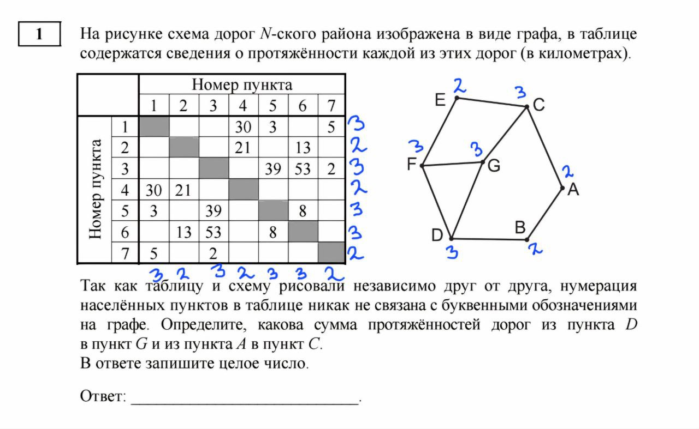
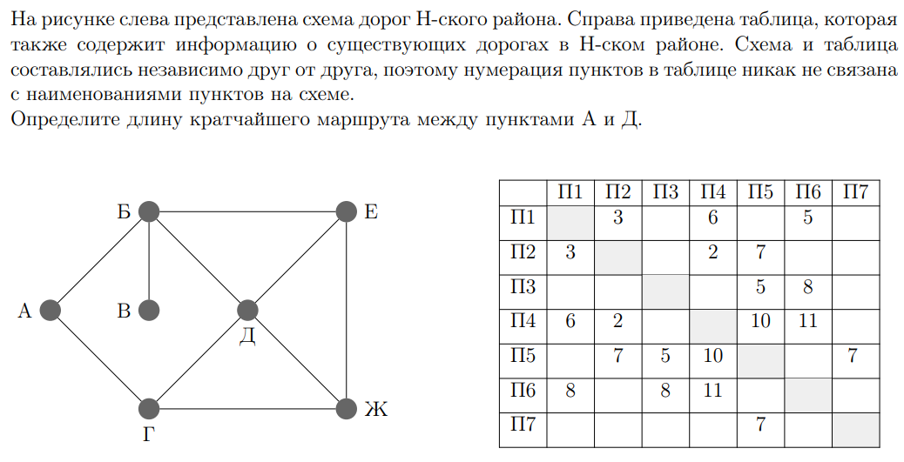

Для решения задач такого типа вам поможет данный алгоритм:
1. Внимательно прочитайте условие задачи и отметьте пункты, которые помогут вам и то что вам надо найти
2. Посчитайте сколько рёбер исходит из вершин и подписать их количество у вершин и у таблицы
3. Найти есть ли число у вершины, которое не повторяется у других вершин и отметить вершины в таблице.
4. Посмотреть есть ли вершины связанные с известной и сопоставить с таблицей
5. Перепроверить рёбра и найденные вершины, чтобы убедиться в правильности решения
6. Дать ответ на вопрос
Пример решения задания из демо-2025:
Сначала нужно для удобства расставить на графике и у таблицы количество дорог, которые исходят из вершин, вот так:

1. Вершина Е имеет 2 дороги, которые идут к F и С у который 3 дороги, следовательно по таблице смотрим какая строчка с цифрой два соответсвует этому условию. Е-7
2. Вершина G имеет 3 дороги, которые идут только в вершины с цифрой 3, роэтому по таблице можно сказать, что G- 5
3. Вершина С имеет 3 дороги и эти дороги идут в вершины с цифрой 2 и G, слеловательно С-1
4. Вершина А имеет 2, олна из которых вершина С,а другая вершина с цифрой 2,следовательно А-4
5. Вершину В оставшаяся вершина с 2 дорогами. В-2
6. Вершина D соединена с известными нам вершинами В и G, поэтому D-6
7. Последняя вершина с 3 это F, поэтому F-3
8. Перепроверяю все вершины
9. Находу протяжённость дорог из D в G и из А в С, равные 8 и 30 соответственно.
10. 30+8=38
11. Ответ:38
Для лучшего усвоения материала можете поробовать решить данную задачу:
